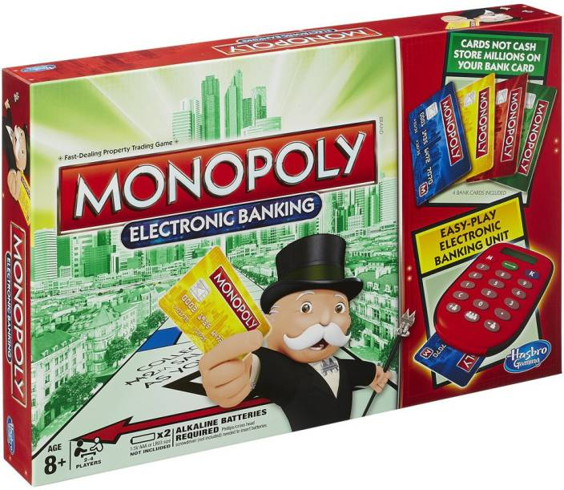

El juego de mesa mas vendido de la historia
Antes
Un juego creado con la funcion de servir como herramienta para enseñar las teorias de la justicia social y economia extraidas del estudio llamado 'Progreso y Miseria' de Henry George.
Monopoly
Comerzializiado por primera vez en el año 1936.
A lo largo de 80 años el juego a sufrido una notable evolucion. Sus multiples ediciones y tantas versiones han dado pie ha que se cambie desde la caja que lo contiene hasta los elementos que lo componen. Logrando asi mantenerse como un favorito por decadas.
Ahora
Con los años la finalidad del juego cambio para solo disfrutar un buen rato, negociando propiedades y haciendo uso de modos electronicos para todas las transacciones que el juego requiere.

Con informacion de
Graffica.info. Cultura visual